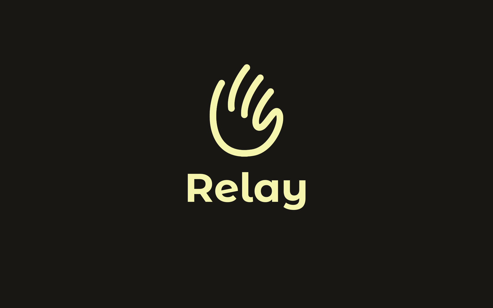
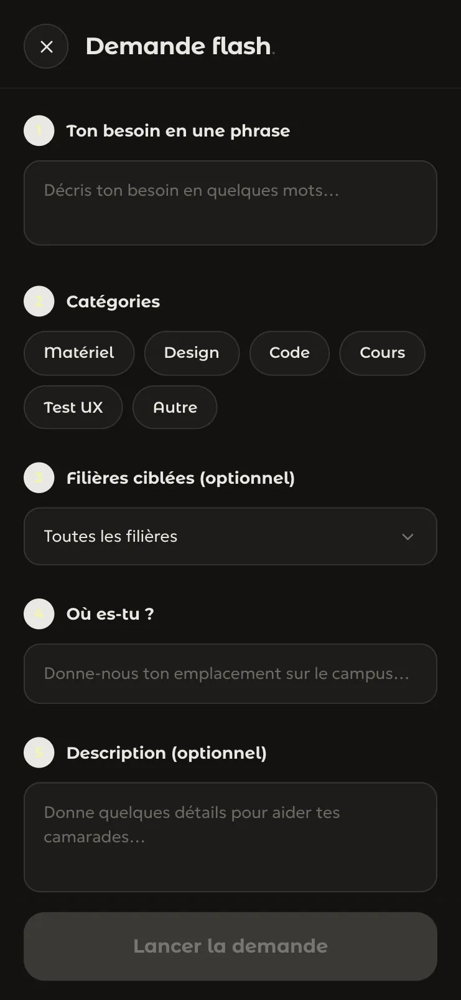
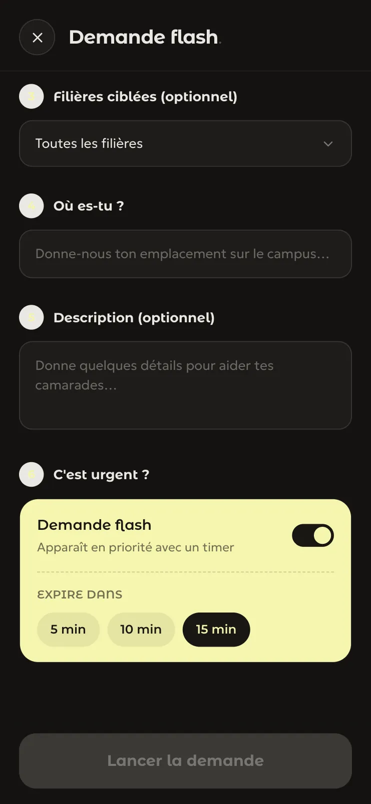
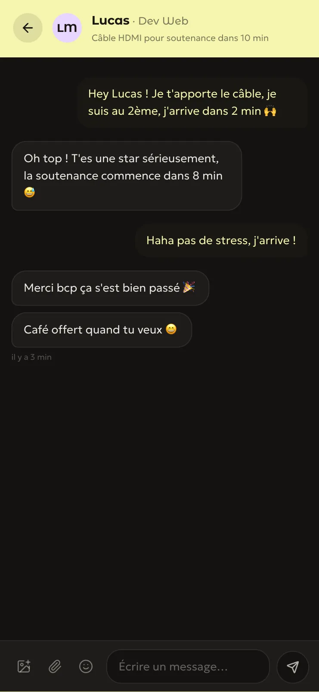
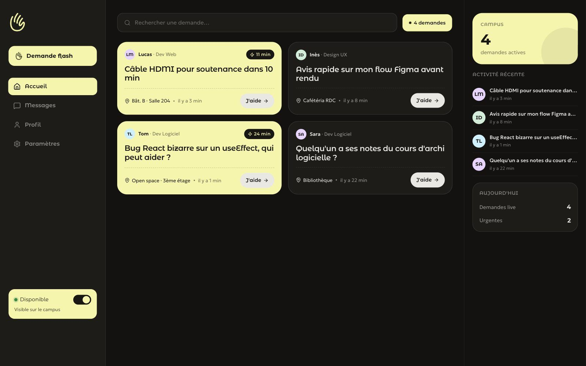

Relay

Webapp d'entraide entre étudiants, 2026. Projet de groupe à Ynov, à quatre. J'ai touché à tout. Claude Code, React, TypeScript, Supabase, Vercel, GitHub. Projet réalisé par Clément Gosselin, Product Builder no-code et IA à Ynov Bordeaux.
Tester l'appLe projet
La demande. Il manque un adaptateur HDMI avant une soutenance, ou un avis sur une maquette Figma, ou quelqu'un qui comprend pourquoi un composant React plante. Relay met ce coup de main en ligne : un étudiant poste une demande flash avec un minuteur, les camarades disponibles la voient arriver en direct et touchent « J'aide ». Ça s'ouvre dans le navigateur, sans rien installer.
Le vrai défi. J'ai touché à tout. On était quatre, tous sur le même site en même temps, en vibe coding avec Claude Code, avec des commits et des pull requests. Le résultat est en ligne : le feed, la création d'une demande en six étapes, la disponibilité « Sur le campus » dans le profil, et une version desktop.




Relay n'est pas une maquette : on peut l'ouvrir sur son téléphone et lancer une demande.